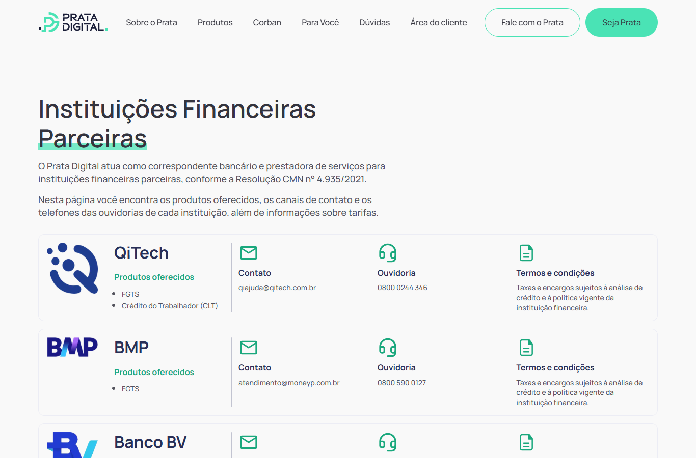
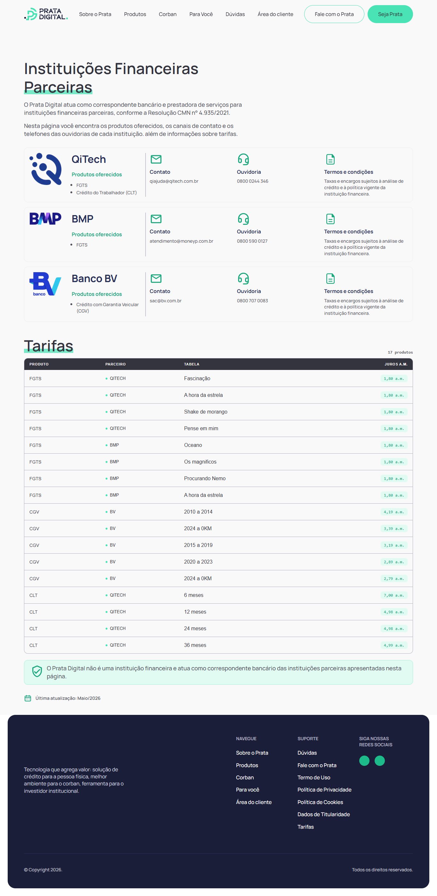

Sistema de Investigação de Marca e Identidade Online
https://www.pratadigital.com.br/instituicoes-financeiras
Prioridade: MEDIUM · Cenário: B_AMBIGUOUS_COMMUNICATION · Revisão humana: PENDING
Trata-se da página de 'Instituições Financeiras Parceiras' da plataforma/correspondente bancário Prata Digital (pratadigital.com.br). Embora a página apresente boa transparência quanto à sua condição de correspondente bancário (citando expressamente a Resolução CMN nº 4.935/2021, listando múltiplas instituições e fornecendo SAC e Ouvidoria do Banco BV), faz uso do logotipo do Banco BV (vedado pelo art. 14, II da Res. CMN 4.935/2021) e não exibe na página ou no rodapé a razão social e o CNPJ da empresa correspondente. Dessa forma, enquadra-se em B_AMBIGUOUS_COMMUNICATION (REVIEW_REQUIRED / MEDIUM) para verificação cadastral e de conformidade. [Revisor: CONFIRM] A avaliação do analista se sustenta. A página pertence à promotora/correspondente bancário Prata Digital e divulga o produto Crédito com Garantia Veicular (CGV) com tabelas de taxas e exibição do logotipo do Banco BV (E-IMG-4, E-SHOT-VIEWPORT, E-SHOT-FULL). Apesar de declarar expressamente a atuação como correspondente bancário nos termos da Resolução CMN nº 4.935/2021 e informar SAC e Ouvidoria do Banco BV (E-TXT-002, E-SHOT-FULL), a página e o seu rodapé (E-FTR) não exibem de forma direta e visível a razão social e o CNPJ da empresa correspondente, além de utilizarem a marca figurativa da instituição contratante, justificando a manutenção de REVIEW_REQUIRED com prioridade MEDIUM.


| Ref | Tipo | Local | Conteúdo |
|---|---|---|---|
| E-URL | domain | url | URL final: https://www.pratadigital.com.br/instituicoes-financeiras (domínio: www.pratadigital.com.br) |
| E-DISC-001 | text | search_index | Índice de busca (grounding): pratadigital.com.br — **URL:** `https://pratadigital.com.br/` | **Uso da marca e recursos:** Exibe o logotipo e o nome do "Banco BV" na página de "Instituições Financeiras Parceiras", divulgando tabelas detalhadas de taxas de juros mensais para o produto Crédito com Garantia Veicular (CGV) do BV | Declara expressamente que não é instituição financeira e que atua como correspondente bancário conforme a Resolução CMN nº 4.935/2021 (fornecendo inclusive SAC e Ouvidoria do Banco BV), mas não exibe de imediato no bloco principal da tabela o CNPJ e a razão social da Prata Digital |
| E-SHOT-VIEWPORT | screenshot | viewport | evidence\C2667b2fa05\attempt-1\viewport.png (sha256 85261ce5ae1a8f4e…) |
| E-SHOT-FULL | screenshot | page | evidence\C2667b2fa05\attempt-1\fullpage.png (sha256 2894f3aa5787b28c…) |
| E-TITLE | title | head | Instituições Financeiras Parceiras - Prata Digital |
| E-META-1 | meta | head | description: O Prata Digital atua como correspondente bancário e prestadora de serviços para instituições financeiras parceiras, conforme a Resolução CMN n° 4.935/2021. Nesta página você encontra os produtos oferecidos, os canais de contato e os telefones das ouvidorias de cada instituição. além de informações sobre tarifas. |
| E-META-2 | meta | head | og:site_name: Prata Digital |
| E-META-3 | meta | head | og:title: Instituições Financeiras Parceiras | Prata Digital |
| E-META-4 | meta | head | og:description: O Prata Digital atua como correspondente bancário e prestadora de serviços para instituições financeiras parceiras, conforme a Resolução CMN n° 4.935/2021. Nesta página você encontra os produtos oferecidos, os canais de contato e os telefones das ouvidorias de cada instituição. além de informações sobre tarifas. |
| E-META-5 | meta | head | author: Insany Design e Desenvolvimento |
| E-HEAD-1 | heading | page | Instituições Financeiras Parceiras |
| E-HEAD-2 | heading | page | Tarifas |
| E-HDR | text | header | Sobre o Prata Produtos Corban Para Você Dúvidas Área do cliente Fale com o Prata Seja Prata |
| E-FOLD | text | viewport (acima da dobra) | Sobre o Prata Produtos Corban Para Você Dúvidas Área do cliente Fale com o Prata Seja Prata Instituições Financeiras Parceiras O Prata Digital atua como correspondente bancário e prestadora de serviços para instituições financeiras parceiras, conforme a Resolução CMN n° 4.935/2021. Nesta página você encontra os produtos oferecidos, os canais de contato e os telefones das ouvidorias de cada instituição. além de informações sobre tarifas. QiTech Produtos oferecidos FGTS Crédito do Trabalhador (CLT) Contato qiajuda@qitech.com.br Ouvidoria 0800 0244 346 Termos e condições Taxas e encargos sujeitos à análise de crédito e à política vigente da instituição financeira. BMP Produtos oferecidos FGTS Contato atendimento@moneyp.com.br Ouvidoria 0800 590 0127 Termos e condições Taxas e encargos sujeitos à análise de crédito e à política vigente da instituição financeira. Banco BV Contato Ouvidoria Termos e condições |
| E-FTR | text | footer | Tecnologia que agrega valor: solução de crédito para a pessoa física, melhor ambiente para o corban, ferramenta para o investidor institucional. NAVEGUE Sobre o Prata Produtos Corban Para você Área do cliente SUPORTE Dúvidas Fale com o Prata Termo de Uso Política de Privacidade Política de Cookies Dados de Titularidade Tarifas SIGA NOSSAS REDES SOCIAIS © Copyright 2026. Todos os direitos reservados. |
| E-NAV | nav | header | <https://www.pratadigital.com.br/> | Sobre o Prata <https://www.pratadigital.com.br/sobre> | Produtos <https://www.pratadigital.com.br/produtos> | Corban <https://www.pratadigital.com.br/corban> | Para Você <https://www.pratadigital.com.br/pessoa-fisica> | Dúvidas <https://www.pratadigital.com.br/faq> | Área do cliente <https://cliente.bancoprata.com.br/auth/login> | Fale com o Prata <https://wa.me/552139422489> | Seja Prata <https://www.pratadigital.com.br/contato> |
| E-CONTACT-1 | contact | header | Fale com o Prata <https://wa.me/552139422489> |
| E-CONTACT-2 | contact | footer | Fale com o Prata <https://wa.me/552139422489> |
| E-CONTACT-3 | contact | footer | Instagram <https://www.instagram.com/pratadigital> |
| E-IMG-1 | image | header (acima da dobra) | imagem alt='Logo Prata Digital' src=https://cdn.sanity.io/images/9dly7j6u/production/1d9f4a8ad707a4ed4a2838156df0db386cb54bdb-138x44.svg (138x44, acima da dobra) |
| E-IMG-2 | image | page (acima da dobra) | imagem alt='Logo QiTech' src=https://www.pratadigital.com.br/_next/image?url=%2F_next%2Fstatic%2Fmedia%2Flogo-qitech.3c5cbc17.png&w=128&q=75 (100x100, acima da dobra) |
| E-IMG-3 | image | page (acima da dobra) | imagem alt='Logo BMP' src=https://www.pratadigital.com.br/_next/image?url=%2F_next%2Fstatic%2Fmedia%2Flogo-bmp.6f3a30e9.png&w=128&q=75 (100x38, acima da dobra) |
| E-IMG-4 | image | page (acima da dobra) | imagem alt='Logo Banco BV' src=https://www.pratadigital.com.br/_next/image?url=%2F_next%2Fstatic%2Fmedia%2Flogo-banco-bv.ac8cd191.webp&w=128&q=75 (100x73, acima da dobra) |
| E-IMG-5 | image | footer | imagem alt='Logo Prata Digital' src=https://cdn.sanity.io/images/9dly7j6u/production/7ddc74d537c4a0fb36ef04d83ff3c41d7f825612-162x47.svg (162x47, abaixo da dobra) |
| E-TXT-001 | text | page | Instituições Financeiras Parceiras |
| E-TXT-002 | text | page | O Prata Digital atua como correspondente bancário e prestadora de serviços para instituições financeiras parceiras, conforme a Resolução CMN n° 4.935/2021. |
| E-TXT-003 | text | page | Nesta página você encontra os produtos oferecidos, os canais de contato e os telefones das ouvidorias de cada instituição. além de informações sobre tarifas. |
| E-TXT-004 | text | page | Ouvidoria |
| E-TXT-005 | text | page | Taxas e encargos sujeitos à análise de crédito e à política vigente da instituição financeira. |
| E-TXT-006 | text | page | atendimento@moneyp.com.br |
| E-TXT-007 | text | page | Ouvidoria |
| E-TXT-008 | text | page | Taxas e encargos sujeitos à análise de crédito e à política vigente da instituição financeira. |
| E-TXT-009 | text | page | Banco BV |
| E-TXT-010 | text | page | sac@bv.com.br |
| E-TXT-011 | text | page | Ouvidoria |
| E-TXT-012 | text | page | Taxas e encargos sujeitos à análise de crédito e à política vigente da instituição financeira. |
| E-TXT-013 | text | page | PRODUTO PARCEIRO TABELA JUROS A.M. |
| E-TXT-014 | text | page | BV |
| E-TXT-015 | text | page | BV |
| E-TXT-016 | text | page | BV |
| E-TXT-017 | text | page | BV |
| E-TXT-018 | text | page | BV |
| E-TXT-019 | text | page | O Prata Digital não é uma instituição financeira e atua como correspondente bancário das instituições parceiras apresentadas nesta página. |
| Dimensão | Sinal | Achado | Refs |
|---|---|---|---|
| VISUAL_IDENTITY | LEGITIMATE | A página utiliza identidade visual própria (Prata Digital, em tons de verde e branco), distinta da identidade do Banco BV. | E-IMG-1 E-SHOT-VIEWPORT E-SHOT-FULL |
| DECLARED_COMMERCIAL_IDENTITY | CONFUSION | Embora se identifique pelo nome fantasia 'Prata Digital', a página e o rodapé não exibem o CNPJ nem a razão social do correspondente bancário. | E-FTR E-SHOT-FULL E-DISC-001 |
| CORRESPONDENT_TRANSPARENCY | LEGITIMATE | Declara expressamente no topo e após a tabela de tarifas que não é instituição financeira e que atua como correspondente bancário conforme a Resolução CMN nº 4.935/2021, informando SAC (sac@bv.com.br) e Ouvidoria (0800 707 0083) do Banco BV. | E-TXT-002 E-TXT-010 E-TXT-019 E-SHOT-FULL |
| INSTITUTIONAL_LANGUAGE | LEGITIMATE | Linguagem clara posicionando a Prata Digital como correspondente multimarcas/prestadora de serviços para diversas instituições financeiras (QiTech, BMP e Banco BV). | E-FOLD E-TXT-002 E-TXT-019 |
| LOGO_USAGE | CONFUSION | Utiliza o logotipo do Banco BV no card da instituição parceira (conduta restrita pelo art. 14, II da Res. CMN 4.935/2021 para correspondentes), aliado à omissão do CNPJ do correspondente na página. | E-IMG-4 E-SHOT-VIEWPORT E-SHOT-FULL |
| SERVICE_JOURNEY | LEGITIMATE | A página é informativa sobre instituições parceiras e tabela de taxas de juros (CGV BV), sem formulários de captação direta de dados sensíveis nesta URL. | E-TXT-013 E-SHOT-FULL |
| CONTACT_CHANNELS | LEGITIMATE | Os canais de contato da empresa ('Fale com o Prata' via WhatsApp) estão claramente separados dos canais de SAC e Ouvidoria das instituições financeiras parceiras. | E-CONTACT-1 E-FOLD E-SHOT-FULL |
| CONSUMER_CONFUSION | NEUTRAL | Baixo risco de o consumidor confundir o site com um canal oficial do Banco BV, mas há falha formal de transparência cadastral pela ausência de CNPJ na página. | E-SHOT-FULL E-FTR |
Trata-se da página de 'Instituições Financeiras Parceiras' da plataforma/correspondente bancário Prata Digital (pratadigital.com.br). Embora a página apresente boa transparência quanto à sua condição de correspondente bancário (citando expressamente a Resolução CMN nº 4.935/2021, listando múltiplas instituições e fornecendo SAC e Ouvidoria do Banco BV), faz uso do logotipo do Banco BV (vedado pelo art. 14, II da Res. CMN 4.935/2021) e não exibe na página ou no rodapé a razão social e o CNPJ da empresa correspondente. Dessa forma, enquadra-se em B_AMBIGUOUS_COMMUNICATION (REVIEW_REQUIRED / MEDIUM) para verificação cadastral e de conformidade.
Há declaração de correspondente ou de parceria, sem identificação suficiente ou sem confirmação cadastral.
| Tipo | Valor | Ref | Contexto |
|---|---|---|---|
| domain | pratadigital.com.br | E-URL | |
| qiajuda@qitech.com.br | E-FOLD | ||
| atendimento@moneyp.com.br | E-FOLD | ||
| social_profile | https://www.instagram.com/pratadigital | E-CONTACT-3 | |
| sac@bv.com.br | E-TXT-010 | ||
| trade_name | Prata Digital | E-META-2 | |
| phone | 0800 590 0127 | E-FOLD | |
| Fale com o Prata <https://wa.me/552139422489> | E-CONTACT-1 | ||
| correspondent_declaration | correspondente bancário | E-META-1 | description: O Prata Digital atua como correspondente bancário e prestadora de serviços para instituições financeiras parceiras, conforme a Resolução CMN n° 4.935/2021. Nesta página você encontra |
| correspondent_declaration | prestadora de serviços | E-META-1 | description: O Prata Digital atua como correspondente bancário e prestadora de serviços para instituições financeiras parceiras, conforme a Resolução CMN n° 4.935/2021. Nesta página você encontra |
| correspondent_declaration | Resolução CMN n° 4.935 | E-META-1 | description: O Prata Digital atua como correspondente bancário e prestadora de serviços para instituições financeiras parceiras, conforme a Resolução CMN n° 4.935/2021. Nesta página você encontra |
| partnership_declaration | Financeiras Parceiras | E-DISC-001 | **Uso da marca e recursos:** Exibe o logotipo e o nome do "Banco BV" na página de "Instituições Financeiras Parceiras", divulgando tabelas detalhadas de taxas de juros mensais para o produto Crédito c |
Mapeamento indicativo para apoio à auditoria. Não constitui conclusão regulatória; a decisão definitiva pertence à auditoria.
Fonte: NORMATIVE
Art. 14. O contrato de correspondente deve estabelecer: [...] II - vedação à utilização, pelo contratado, de logomarca ou de outros atributos que sejam similares aos adotados pela instituição contratante em suas agências, postos de atendimento, sítio eletrônico na internet, aplicativo ou outras plataformas de comunicação em rede;
Hipótese: Uso de logomarca ou de atributos similares aos adotados pela contratante em seus canais. Aplicável somente se confirmado o vínculo de correspondente.
Evidência observada: E-IMG-4 E-SHOT-FULL E-SHOT-VIEWPORT
Informação faltante:
Fonte: NORMATIVE
Art. 14. O contrato de correspondente deve estabelecer: [...] III - divulgação ao público, pelo contratado, de sua condição de prestador de serviços à instituição contratante, identificada pelo nome com que é conhecida no mercado, com descrição dos produtos e serviços oferecidos e canais de contato da instituição contratante, inclusive de sua ouvidoria, em local visível, em destaque e em formato legível, por meio de: a) sítio eletrônico do correspondente na internet, acessível na página inicial; b) aplicativo e outras plataformas de comunicação em rede do correspondente; [...]
Hipótese: Há declaração da condição de correspondente/prestador, mas outros elementos da página (DECLARED_COMMERCIAL_IDENTITY) podem contradizê-la ou reduzir seu efeito (destaque, legibilidade e identificação da contratante a verificar). Aplicável somente se confirmado o vínculo de correspondente.
Evidência observada: E-DISC-001 E-FTR E-SHOT-FULL
Informação faltante:
Fonte: NORMATIVE
Art. 3º O correspondente atua por conta e sob as diretrizes da instituição contratante, que assume inteira responsabilidade pelo atendimento prestado aos clientes e usuários por meio do contratado.
Evidência observada: E-CONTACT-1 E-FOLD E-SHOT-FULL E-TXT-013
Limitações: requisitos contratuais/internos não fornecidos: mapeamento limitado ao texto normativo
Decisão: CONFIRM → REVIEW_REQUIRED / MEDIUM
A avaliação do analista se sustenta. A página pertence à promotora/correspondente bancário Prata Digital e divulga o produto Crédito com Garantia Veicular (CGV) com tabelas de taxas e exibição do logotipo do Banco BV (E-IMG-4, E-SHOT-VIEWPORT, E-SHOT-FULL). Apesar de declarar expressamente a atuação como correspondente bancário nos termos da Resolução CMN nº 4.935/2021 e informar SAC e Ouvidoria do Banco BV (E-TXT-002, E-SHOT-FULL), a página e o seu rodapé (E-FTR) não exibem de forma direta e visível a razão social e o CNPJ da empresa correspondente, além de utilizarem a marca figurativa da instituição contratante, justificando a manutenção de REVIEW_REQUIRED com prioridade MEDIUM.
| Tema | Severidade | Questionamento | Refs |
|---|---|---|---|
| Identificação societária em páginas auxiliares | LOW | Embora o CNPJ e a razão social não estejam visíveis diretamente na página de instituições parceiras ou no rodapé global (E-FTR, E-SHOT-FULL), o rodapé contém um link denominado 'Dados de Titularidade' que pode conter esses dados cadastrais. | E-FTR E-SHOT-FULL |
| contradictory_evidence | LOW | Coexistem declaração de correspondente e indícios de confusão. | E-FOLD E-META-1 E-META-4 |
| Fonte | Consulta / hipótese | URL original | Título / trecho |
|---|---|---|---|
| grounding | Objetivo: Correspondentes bancários e promotoras que declaram vínculo com a marca.
Execute no Google Search as seguintes consultas (dorks):
- ("correspondente bancário" OR "Correspondente no País" OR "correspondente do Banco BV") "Banco BV" -site:bv.com.br -site:bancobv.com.br -site:bvfinanceira.com.br -site:bvinvestimentos.com.br -site:napista.com.br -site:bvopen.com.br -site:meufinanciamentosolar.com.br -site:votorantim.com.br -site:vam.com.br -site:reclameaqui.com.br -site:jusbrasil.com.br -site:jus.br -site:weebly.com -site:site123.me
- ("correspondente BV" OR "Somos correspondente" "Banco BV" OR "correspondente" "bv financeira") financiamento -site:bv.com.br -site:bancobv.com.br -site:bvfinanceira.com.br -site:bvinvestimentos.com.br -site:napista.com.br -site:bvopen.com.br -site:meufinanciamentosolar.com.br -site:votorantim.com.br -site:vam.com.br -site:reclameaqui.com.br -site:jusbrasil.com.br -site:jus.br -site:weebly.com -site:site123.me
Liste de forma abrangente as páginas públicas encontradas (até 12 resultados distintos), informando para cada uma o nome do estabelecimento/perfil, a URL e como a marca é utilizada (destaque visual, título, feirão, simulador, redes sociais e se há ou não identificação clara de CNPJ e condição de correspondente bancário). H3-service:correspondente-vinculo | https://www.pratadigital.com.br/instituicoes-financeiras | pratadigital.com.br **URL:** `https://pratadigital.com.br/` | **Uso da marca e recursos:** Exibe o logotipo e o nome do "Banco BV" na página de "Instituições Financeiras Parceiras", divulgando tabelas detalhadas de taxas de juros mensais para o produto Crédito com Garantia Veicular (CGV) do BV | Declara expressamente que não é instituição financeira e que atua como correspondente bancário conforme a Resolução CMN nº 4.935/2021 (fornecendo inclusive SAC e Ouvidoria do Banco BV), mas não exibe de imediato no bloco principal da tabela o CNPJ e a razão social da Prata Digital |
Original: https://www.pratadigital.com.br/instituicoes-financeiras
Final: https://www.pratadigital.com.br/instituicoes-financeiras
| Artefato | Caminho | SHA-256 | Bytes |
|---|---|---|---|
| screenshot_viewport | evidence\C2667b2fa05\attempt-1\viewport.png | 85261ce5ae1a8f4e93bac003b85515ccd44e43d6a95ace00453b41c7e2dbc14f | 149915 |
| screenshot_full | evidence\C2667b2fa05\attempt-1\fullpage.png | 2894f3aa5787b28ce1f0e9d82d52fe83c6e8702d2d6cc31e62e69b0e990e0656 | 302130 |
| html | evidence\C2667b2fa05\attempt-1\page.html.txt | ffd8557d8224893a095436dd4e171db910ef4bbc5491ef24a79c29bb2863759f | 49758 |
| text | evidence\C2667b2fa05\attempt-1\text.txt | effa4b4b46534f49f744007fa158ec922fb88fd85de7fea893d3ee211e14eeba | 2441 |
| page_data | evidence\C2667b2fa05\attempt-1\page.json | b90feafe48471609a4809e416a96c81871028457119c0325768b5e046204722c | 13102 |
| Quando | De | Para | Nota |
|---|---|---|---|
| 2026-11-23T14:17:58+00:00 | DISCOVERED | QUEUED | prioritised (score 1.0) |
| 2026-11-23T14:43:23+00:00 | QUEUED | COLLECTING | |
| 2026-11-23T14:43:34+00:00 | COLLECTING | COLLECTED | |
| 2026-11-23T14:43:34+00:00 | COLLECTED | ANALYZING | |
| 2026-11-23T14:44:07+00:00 | ANALYZING | REVIEWING | |
| 2026-11-23T14:44:28+00:00 | REVIEWING | COMPLETED |